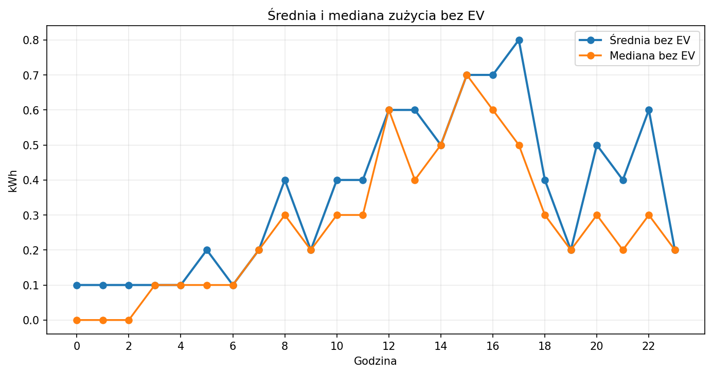
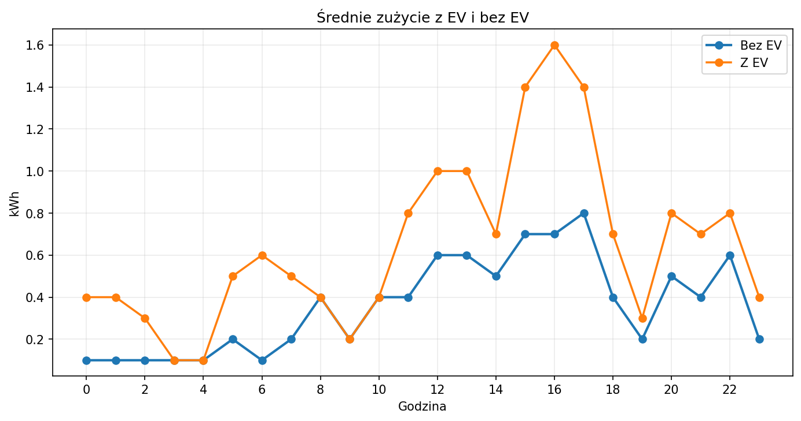
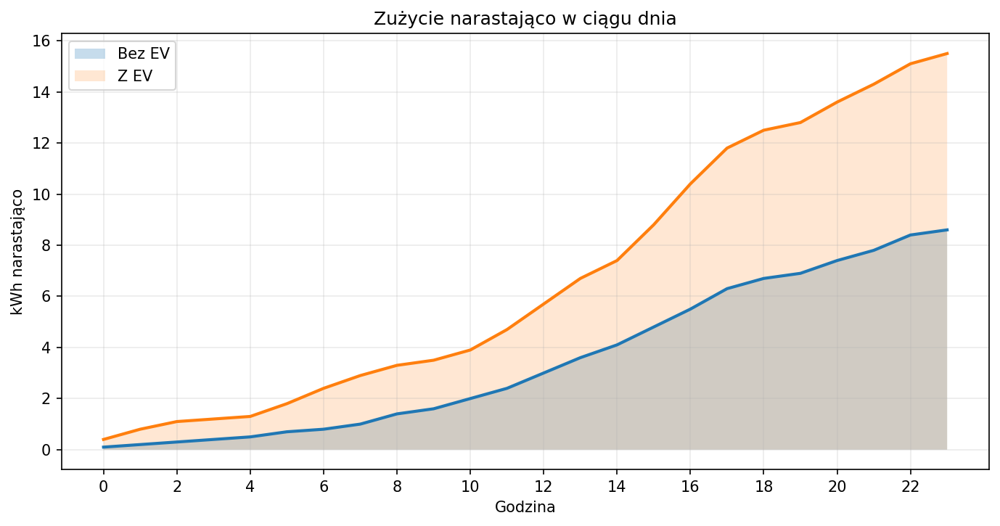
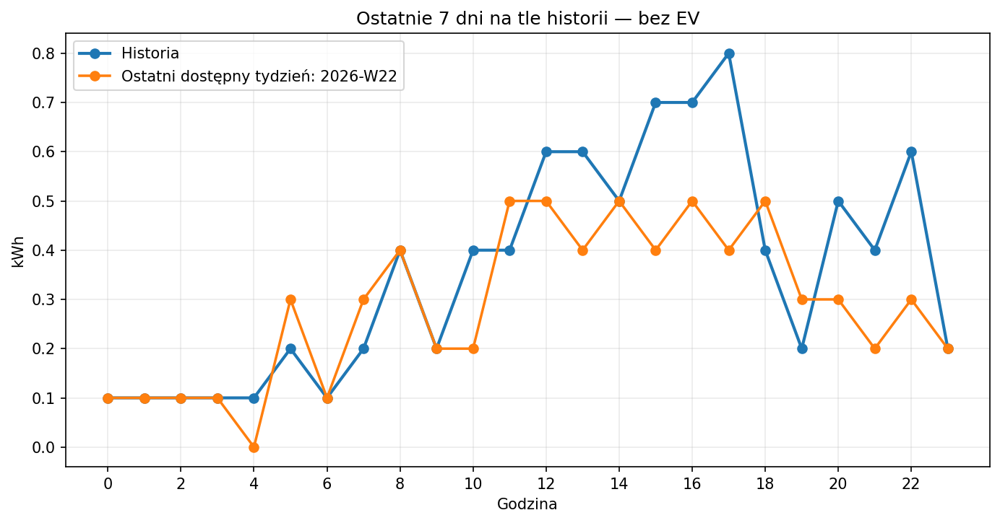
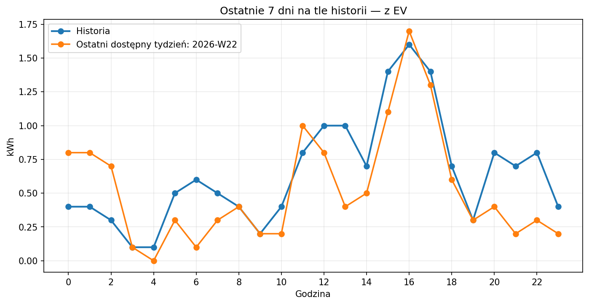
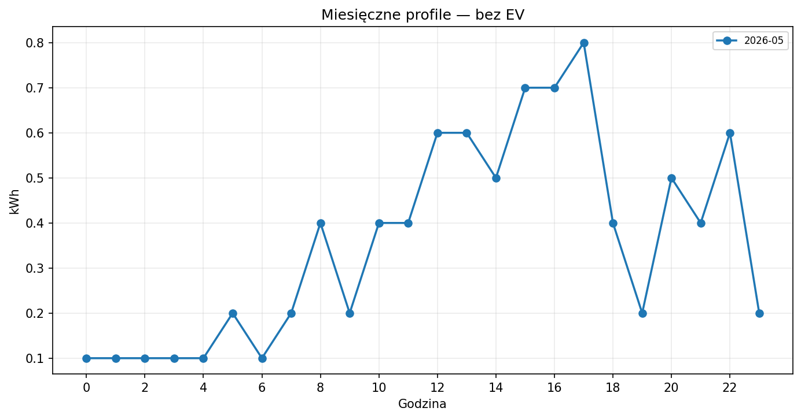
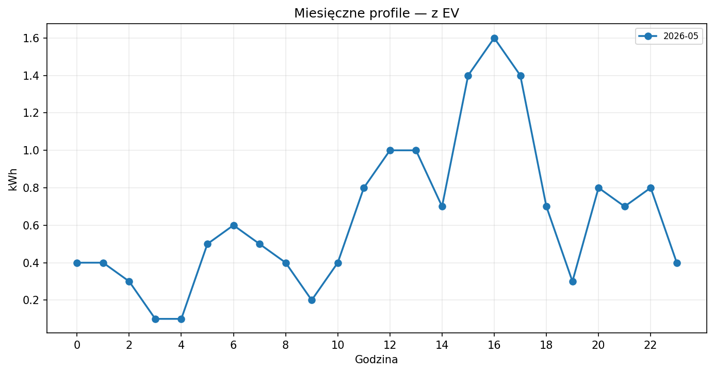
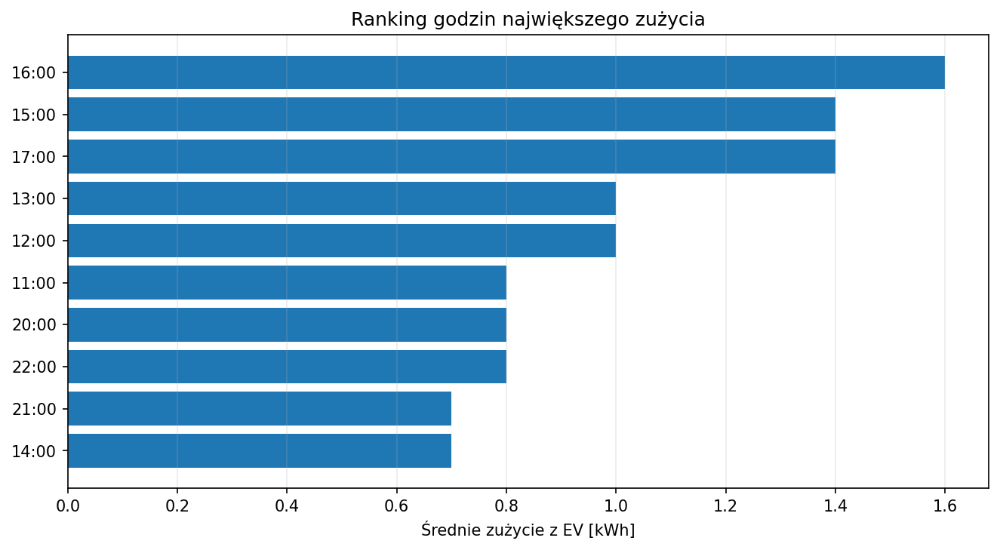

Profil zużycia energii
Raport pokazuje typowe godzinowe profile zużycia energii w domu, osobno z ładowaniem auta i bez ładowania auta. Dane pochodzą z modułu 20_15_energy_use.
Jak czytać raport
Raport korzysta z danych przygotowanych przez moduł 20_15_energy_use. Warstwa raportowa nie liczy zużycia od nowa, tylko czyta gotowe profile godzinowe wygenerowane w tym samym przebiegu.
Pierwszy wykres porównuje średnią i medianę. Mediana jest odporna na pojedyncze nietypowe zdarzenia, ale może ukrywać nieregularne, lecz energetycznie istotne ładowanie auta. Dlatego dalsze wykresy raportu opierają się na średnich, które są bardziej intuicyjne i lepiej pokazują rzeczywisty ciężar energii w profilu godzinowym.
Brak danych nie jest traktowany jako zużycie zerowe. Jeżeli godzina jest niepełna albo źródłowy profil zawiera brak, raport pozostawia brak danych zamiast sztucznie wygładzać wynik.
Średnia i mediana
Ten wykres pokazuje różnicę między średnią i medianą. W dalszej części raportu używamy średniej, ponieważ jest bardziej intuicyjna i lepiej pokazuje energetyczny wpływ nieregularnego ładowania EV.

Zużycie z autem i bez auta
Odległość między krzywymi pokazuje średni godzinowy ślad ładowania auta.

Zużycie narastająco w ciągu dnia
Powierzchnie pokazują, jak narasta średnie zużycie energii od północy do kolejnych godzin dnia.

Ostatnie 7 dni na tle historii — bez EV
Porównanie pozwala zobaczyć, czy ostatni tydzień odbiega od długoterminowego profilu domu bez ładowania auta.

Ostatnie 7 dni na tle historii — z EV
Ten sam test, ale dla całkowitego zużycia wraz z ładowaniem auta.

Tygodniowe profile — animacja
Kolejne tygodnie są dokładane na wykres co kilka sekund, żeby pokazać zmianę profilu w czasie bez robienia statycznego spaghetti.
Miesięczne profile — bez EV
Profile miesięczne pokazują sezonowość podstawowego zużycia domu.

Miesięczne profile — z EV
Profile miesięczne z EV pokazują sezonowość całkowitego zużycia wraz z ładowaniem auta.

Ranking godzin największego zużycia
Ranking pokazuje godziny o najwyższym średnim zużyciu. To dobry skrót do decyzji taryfowych, bateryjnych i sterowania EV.

Tabele rozwijane
Średnia i mediana — bez EV
| hour | avg_without_ev_kWh | median_without_ev_kWh |
|---|---|---|
| 00 | 0.1 | 0.0 |
| 01 | 0.1 | 0.0 |
| 02 | 0.1 | 0.0 |
| 03 | 0.1 | 0.1 |
| 04 | 0.1 | 0.1 |
| 05 | 0.2 | 0.1 |
| 06 | 0.1 | 0.1 |
| 07 | 0.2 | 0.2 |
| 08 | 0.4 | 0.3 |
| 09 | 0.2 | 0.2 |
| 10 | 0.4 | 0.3 |
| 11 | 0.4 | 0.3 |
| 12 | 0.6 | 0.6 |
| 13 | 0.6 | 0.4 |
| 14 | 0.5 | 0.5 |
| 15 | 0.7 | 0.7 |
| 16 | 0.7 | 0.6 |
| 17 | 0.8 | 0.5 |
| 18 | 0.4 | 0.3 |
| 19 | 0.2 | 0.2 |
| 20 | 0.5 | 0.3 |
| 21 | 0.4 | 0.2 |
| 22 | 0.6 | 0.3 |
| 23 | 0.2 | 0.2 |
Średnia — z EV i bez EV
| hour | avg_without_ev_kWh | avg_with_ev_kWh |
|---|---|---|
| 00 | 0.1 | 0.4 |
| 01 | 0.1 | 0.4 |
| 02 | 0.1 | 0.3 |
| 03 | 0.1 | 0.1 |
| 04 | 0.1 | 0.1 |
| 05 | 0.2 | 0.5 |
| 06 | 0.1 | 0.6 |
| 07 | 0.2 | 0.5 |
| 08 | 0.4 | 0.4 |
| 09 | 0.2 | 0.2 |
| 10 | 0.4 | 0.4 |
| 11 | 0.4 | 0.8 |
| 12 | 0.6 | 1.0 |
| 13 | 0.6 | 1.0 |
| 14 | 0.5 | 0.7 |
| 15 | 0.7 | 1.4 |
| 16 | 0.7 | 1.6 |
| 17 | 0.8 | 1.4 |
| 18 | 0.4 | 0.7 |
| 19 | 0.2 | 0.3 |
| 20 | 0.5 | 0.8 |
| 21 | 0.4 | 0.7 |
| 22 | 0.6 | 0.8 |
| 23 | 0.2 | 0.4 |
Ranking godzin
| hour | without_ev_kWh | with_ev_kWh | ev_impact_kWh | hour_label |
|---|---|---|---|---|
| 16 | 0.7 | 1.6 | 0.9 | 16:00 |
| 17 | 0.8 | 1.4 | 0.6 | 17:00 |
| 15 | 0.7 | 1.4 | 0.7 | 15:00 |
| 12 | 0.6 | 1.0 | 0.4 | 12:00 |
| 13 | 0.6 | 1.0 | 0.4 | 13:00 |
| 22 | 0.6 | 0.8 | 0.2 | 22:00 |
| 20 | 0.5 | 0.8 | 0.3 | 20:00 |
| 11 | 0.4 | 0.8 | 0.4 | 11:00 |
| 14 | 0.5 | 0.7 | 0.2 | 14:00 |
| 21 | 0.4 | 0.7 | 0.3 | 21:00 |
Brakujące pliki opcjonalne
- 20_15_energy_use_slot_diagnostics.csv
Pliki źródłowe
Raport korzysta z następujących plików wygenerowanych przez 20_15_energy_use:
/work/20_analysis/20_15_energy_use/20_15_energy_use_hourly_avg_all_without_ev.csv/work/20_analysis/20_15_energy_use/20_15_energy_use_hourly_median_all_without_ev.csv/work/20_analysis/20_15_energy_use/20_15_energy_use_hourly_avg_all_with_ev.csv/work/20_analysis/20_15_energy_use/20_15_energy_use_hourly_median_all_with_ev.csv/work/20_analysis/20_15_energy_use/20_15_energy_use_hourly_cumulative_avg_forecast.csv/work/20_analysis/20_15_energy_use/20_15_energy_use_hourly_cumulative_median_forecast.csv/work/20_analysis/20_15_energy_use/20_15_energy_use_hourly_avg_weekly_without_ev.csv/work/20_analysis/20_15_energy_use/20_15_energy_use_hourly_avg_weekly_with_ev.csv/work/20_analysis/20_15_energy_use/20_15_energy_use_hourly_avg_monthly_without_ev.csv/work/20_analysis/20_15_energy_use/20_15_energy_use_hourly_avg_monthly_with_ev.csv/work/20_analysis/20_15_energy_use/20_15_energy_use_hourly_median_weekly_without_ev.csv/work/20_analysis/20_15_energy_use/20_15_energy_use_hourly_median_weekly_with_ev.csv/work/20_analysis/20_15_energy_use/20_15_energy_use_hourly_median_monthly_without_ev.csv/work/20_analysis/20_15_energy_use/20_15_energy_use_hourly_median_monthly_with_ev.csv